Pick a look by eye
Screenshots from the hero-bar branch build, at full size (1920 x 1080 window, cropped tight, not scaled). Each group asks one question; write your pick under it in the eye-check file.
1. Hero HP bar
Which HP bar look do you want: A, B or C?
A is a smooth plate, B splits the bar into tick segments, C adds a heart in front of the bar.
Bottom hero bar (QA Waiter wounded 5/11, QA No Job healthy 11/11, QA Hurt knocked out 0/11)
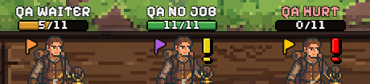
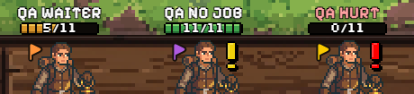
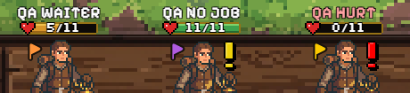
Hero sheet (QA Waiter, wounded)
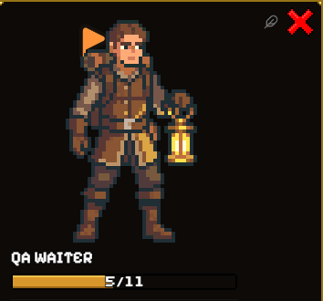
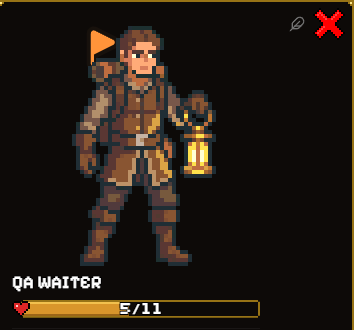
2. Hero names in the Bank's hero column
How should a hero's name be written in the Bank's hero column: A, B or C?
A puts the name on a dark plate under the portrait, B on a gold ribbon, C writes it in outlined letters over the portrait. Bank open, 8 heroes.
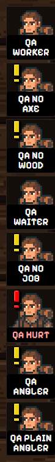
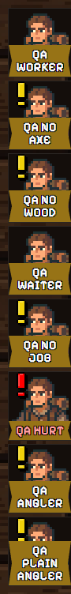
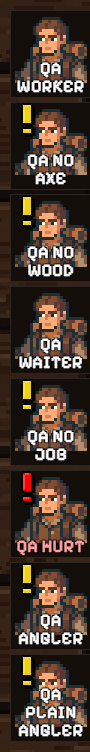
3. Token card
Which Token card layout do you want: A, B or C?
A shows the art in a strip across the top, B puts the art behind the whole card, C puts the art in a column down the left (a wider card).
Copper Ore Vein (a gathering Token with card art)
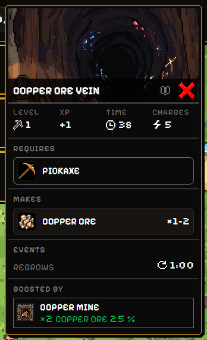
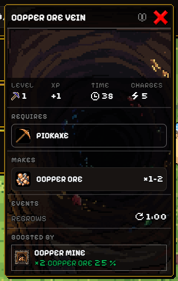
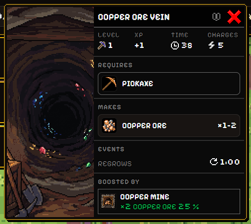
Campfire (a station showing its recipe list)
While the recipe list shows, C leaves the art out to give the rows their width, so C looks like a card with no art.
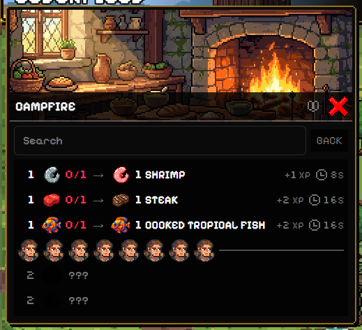
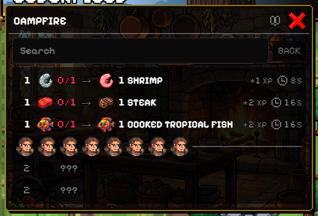
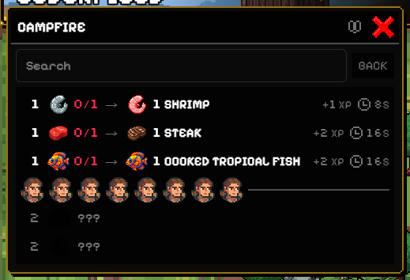
Oak Tree (a tree)
Trees have no card art yet, so all three looks draw the same plain card.
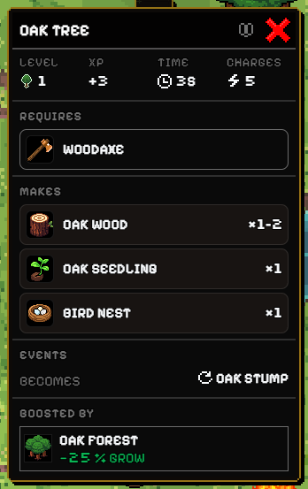
Goblin (an enemy)
Enemies have no card art yet either, so all three looks draw the same plain card.
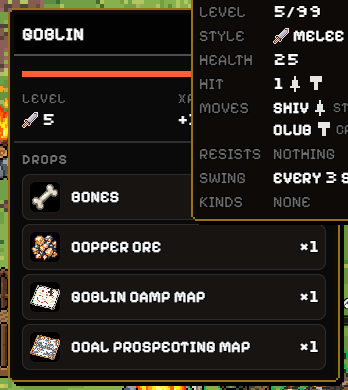
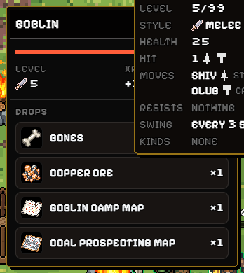
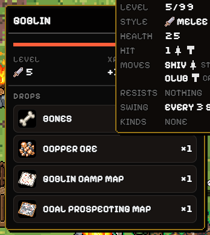
4. Token spacing
How closely may Tokens crowd together: 40 % overlap (old), 35 %, or 30 % (new)?
The same twelve Tokens dropped near the same spot with the dial at each setting; less overlap leaves more of each Token showing.
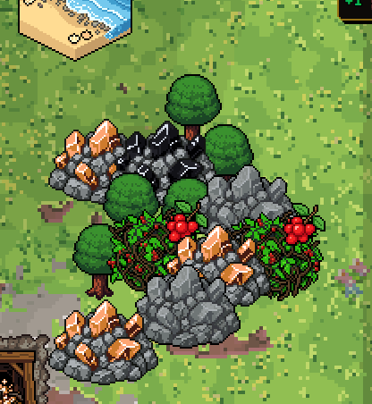
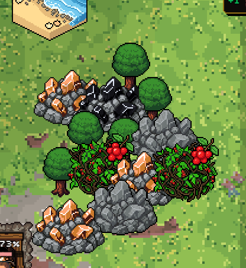
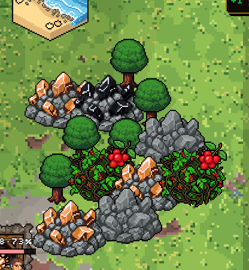
5. Hover
When the pointer rests on a Token half hidden behind others, should it lift to the front: A off or B on?
The pink arrow marks the pointer, on the Oak Tree tucked behind the berry bush (40 % crowding). With the lift on, the tree draws in front of the bush.
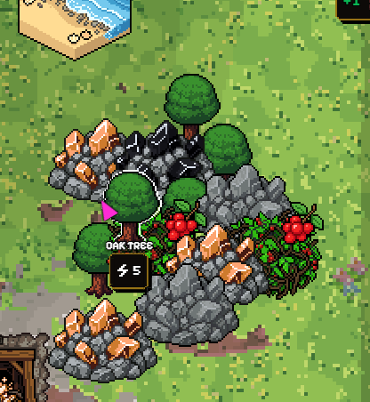
6. Heroes on top
Heroes now always draw in front of Tokens. Is that right?
Only the new way can be shown on this build. Two heroes sent into the crowded spot: the lower one stands in front of the copper ore and berry bush, the upper one in front of the ore at his feet.
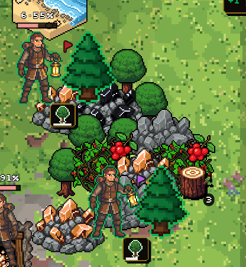